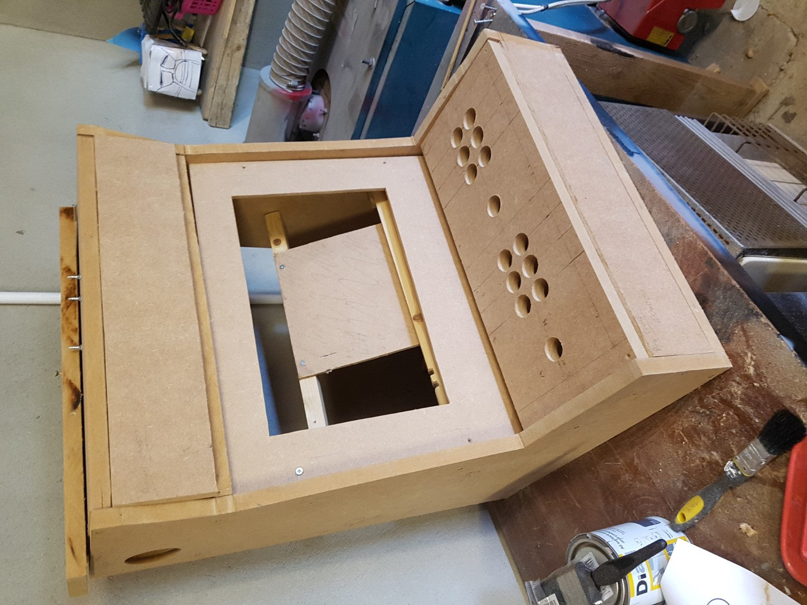

Mame Bartop Build
After initially building a control panel to test everything out, i wanted to build a bar top cab so i could play mame games.
{kind=link}
Donor Laptop
A Dell Vostro 1710 laptop provided the internals for the build and the cab was built around that. It provided the core dimensions. It's a Core 2 Duo with 4 GB of RAM and an Intel Integrated Video Card.
Image below shows some early experiments in order to make sure I could power the laptop on and off from an external button. I had always planned to detach the screen and body, but once I got it open, there wasn't much length to the cable joining the 2 halves, although the screen itself had some very useful mounting holes which take a 3.5mm bolt. This was how i mounted it to the front panel.
 |
{kind=link}
{kind=link}
{kind=link}
In the end it was relatively simple and the board had some nice large contacts I could use to attach the wires for a normal arcade button.
Cabinet
Once I had a width I looked at the cabinet. I went with a width of 500mm and I built a test Control panel to make sure it was enough for 2 players. (Now painted bright yellow and refitted with some cheap buttons and a an internal raspberry pi)
I got the layout from here << INSERT LINK >>
I used Google Sketchup to plan the build and started into it back in 2013. The SketchUp File is available here on sketchup or for downloading the skp file here
It was easy to build the unit but once I got to that stage I got stuck on how to mount a monitor to a front panel. (and left this for about 4 years continually moving this around the garage)
{kind=link}
{kind=link}
{kind=link}
{kind=link}
{kind=link}
Eventually I got a head of steam up to tackle this and spend some time on the software getting the laptop up and running.
I also went for the front panel, using 9mm MDF and routing out the opening using paper templates.
I also worked out a way to mount the laptop within the cabinet keeping it close to the screen. I used 2 cross bars and the insert removed on the 9mm panel to create an angled shelf to hold the laptop so the cable would reach. I attached velcro patches to the laptop and shelf and this is all that's need to keep it in place.
With the plan all done, i got to priming and paint the cabinet. I went for a gray base primer all over to keep dust down and then applied black glass spray paint up in a number of layers with sanding in between.
I had toyed with T-molding, but my router has an 8mm socket (got it second hand and think it came from Aldi) so not easy to find a suitable slot cutter. In hindsight I wish I'd at least routed a bevel on the side panels.
 |
|
|  | |
{kind=link}
{kind=link}
{kind=link}
{kind=link}
{kind=link}
At this stage it was easy to start assembling the cabinet.
I sued a 4 gang inside the cabinet to distribute power and also used velcro to keep all the components on the floor of the cabinet.
{kind=link}
{kind=link}
{kind=link}
{kind=link}
{kind=link}
Control Panel
 |
Audio
The Audio parts were all recycled. I used an old IPod dock as the amp (It takes audio in as well as the old style) and then wired these into some speakers i took from an old hello Kitty cd radio. Worked great and the old thing i had to buy were grills for the outside of the cabinet. THese cover the outlets I drilled in with a hole saw. The speakers are mounted on the inside just using some nail in cable clips.
{kind=link}
{kind=link}
Marquee
For the marquee (and Side art) I tried to find something that suited the size of the cabinet. I originally planned space invaders (as per the sketchup) but I found the battlezone side art and marquee stickers pretty cheap on ebay so went with that. I really liked how it turned out. For teh lights I'm using a usb led strip that I cut down to size, and it links nicely with the laptop being powered on.
{kind=link}
{kind=link}
And here is the completed product.
Finished
{kind=link}
{kind=link}
Software
For software I'm using HyperSpin and RocketLaucher. I've got Mame and a number of consoles setup with a large number of games (thousands). In reality it's too many so i plan to revisit this and bring it back to a manageable amount.
It will play mame and 16 bit consoles ok. Struggles to play PSX games, so i don't use it for that. Even in Mame it's struggling to play things like NeoGeo games for fbaburn works fine.
Another issue I have is that it's very slow for a game to launch. Fine for me, but can be hard to explain to some of the younger family members.
Future
I'd like to put a better PC inside, so might look at a cheap panel interface and update this at some point.